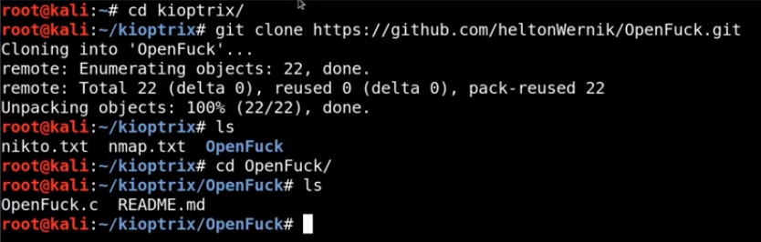

search on google openluck and go to first github link : GitHub - heltonWernik/OpenLuck: OpenFuck exploit updated to linux 2018 - Apache mod_ssl < 2.8.7 OpenSSL - Remote Buffer Overflow
change dir to kioptrix
clone github link
change to folder
it has .C file , we need to get executable file

to compile .C file we need to install

compile file by then list out

in green highlited color we have our executable script
runt it by
./open
and it gives many more payload options

we have x6b version , we also know that kioptrix run on redhat linux with apache 1.3.20

write command according to syantax given by script and run it

after execution it give as commnd prompt

we got access
try some more command

cat command works
now try

this gives hashed format of passwd

we can extract passwd for hash , we later see this